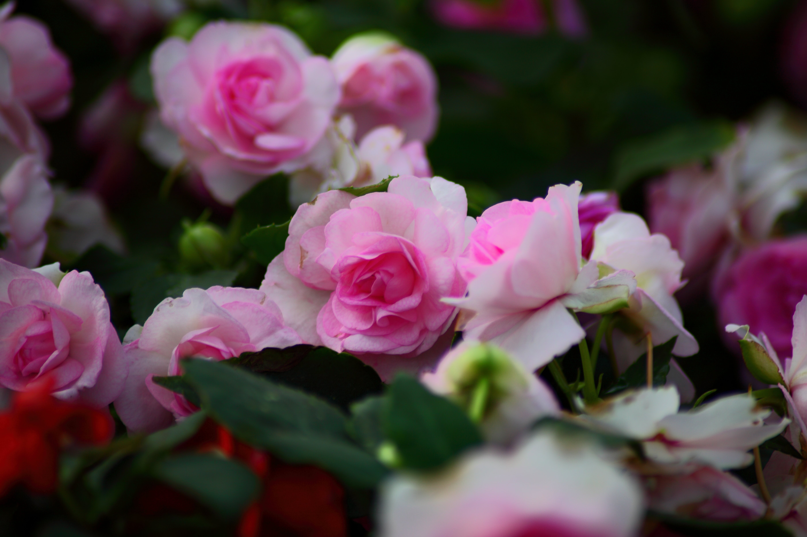
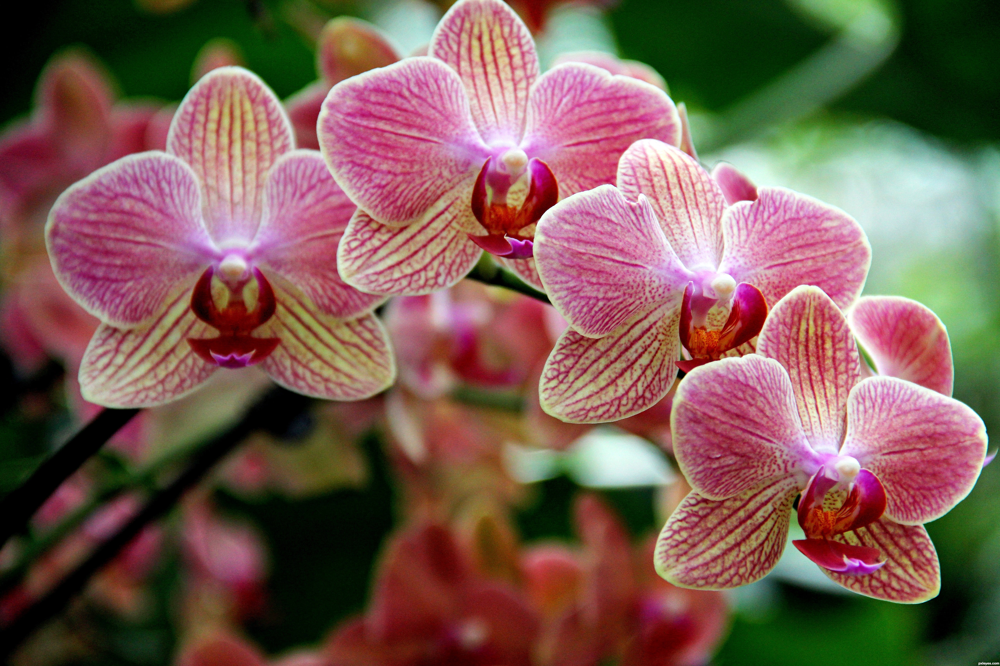
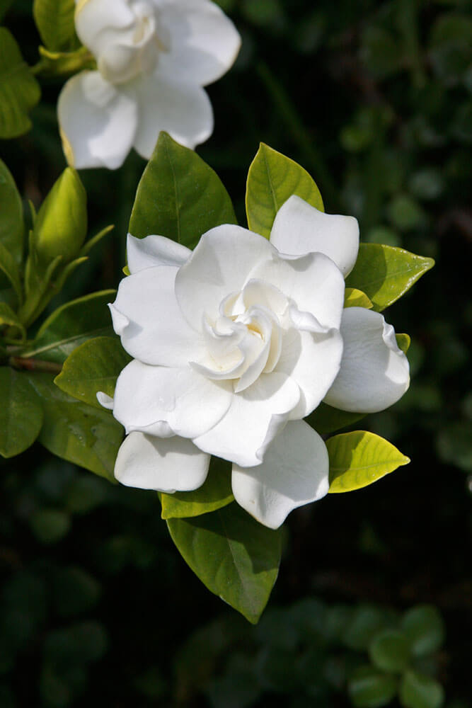

Learn About A Plant
Roses
A timeless garden classic, this flowering plant comes in a wide range of colors, shapes, and sizes. It needs at least six hours of direct sunlight, well-draining soil, and regular pruning. With attentive care, it rewards gardeners with blooms from spring through fall, often carrying a lovely fragrance as well.
Crape Myrtles

Bursting with vibrant color in the heat of summer, this hardy tree or shrub lights up gardens with clusters of flowers in pink, red, white, or purple. It thrives in full sun, is drought-tolerant once established, and requires only light pruning to maintain shape and encourage extended blooming into early fall.
Orchids
Elegant and tropical, these flowering plants are known for their intricate, long-lasting blooms and graceful appearance. They flourish in bright, indirect light with high humidity and need a well-draining orchid mix. With minimal but consistent watering, they can bloom for weeks or even months, adding a touch of the exotic to indoor or shaded garden spaces.
Gardenias
Fragrant white flowers and glossy green leaves make this shrub a garden favorite, especially in warmer, humid climates. It thrives in acidic, well-drained soil and prefers morning sun with afternoon shade. Consistent moisture and protection from cold drafts help ensure a long blooming season from late spring through summer.